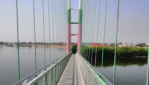

Komati Cheruvu
Komati Cheruvu in Siddipet is a picturesque lake known for its natural beauty and tranquil surroundings. It serves as a popular spot for locals and tourists alike, offering opportunities for boating, picnicking, and enjoying the serene environment.
Location: Siddipet, Telangana, India
Activities: Boating, picnicking, bird watching
Transportation: Accessible by road, located near major bus routes.